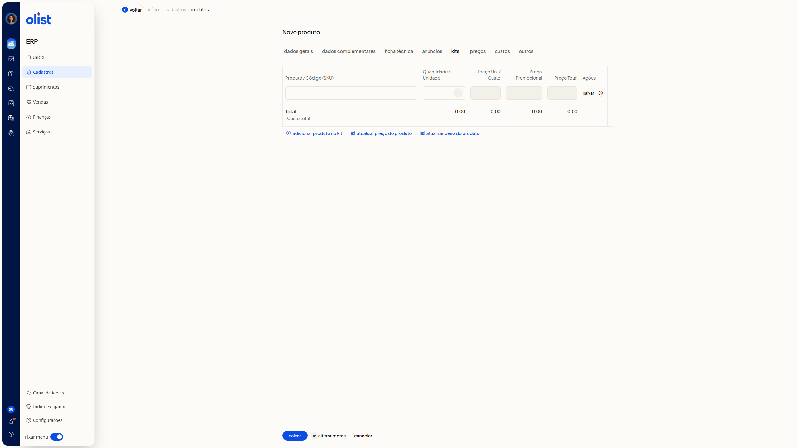
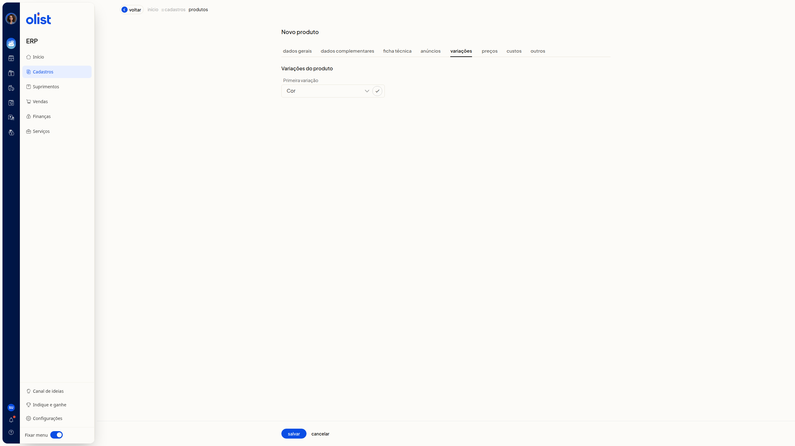

Como trabalhar com kits que possuem variações?
Descrição
No ERP da Olist, a ficha Novo produto serve para cadastrar um kit ou um produto com variações. O tipo escolhido em Tipo do Produto define o que você configura em seguida: a composição do kit ou a primeira variação.
Acesse ERP > Cadastros > Produtos e clique em Incluir produto. A ficha abre com o título Novo produto e a trilha Início > Cadastros > Produtos.
Importante: as abas Kits e Variações não aparecem juntas. A aba exibida depende de Tipo do Produto.
Pré-requisitos
- Tenha permissão de produtos para acessar o cadastro de novo produto.
- Acesse a lista de produtos pelo menu Cadastros.
- Para usar o tipo Com variações, a empresa precisa ter o módulo de variações.
- Para ver e usar a aba Kits, deixe Tipo do Produto em Kit.
- Para ver e usar a aba Variações, deixe Tipo do Produto em Com variações.
Instruções
Tipo do Produto não é obrigatório. As opções incluem Kit e Com variações. Escolha um dos caminhos abaixo.
Como abrir a ficha de novo produto
- Acesse ERP > Cadastros > Produtos.
- Clique em Incluir produto. A ficha Novo produto abre na aba Dados Gerais, pronta para preenchimento. Salvar e Cancelar ficam no rodapé.
Como cadastrar a composição de um kit
-
Na aba Dados Gerais, selecione Kit em Tipo do Produto. A aba Kits passa a aparecer.
-
Clique na aba Kits.
-
Confira as colunas Produto / Código (SKU), Quantidade / Unidade, Preço Un. / Custo, Preço Promocional, Preço Total e Ações.
-
Clique em adicionar produto no kit para incluir componentes. Use atualizar preço do produto ou atualizar peso do produto para atualizar preço ou peso. O botão alterar regras também está na aba. A composição fica visível. Sem componentes, a tabela permanece vazia e os totais ficam em R$ 0,00.

Como definir a primeira variação do produto
-
Na aba Dados Gerais, selecione Com variações em Tipo do Produto. A aba Kits sai e a aba Variações aparece.
-
Clique na aba Variações.
-
No bloco Variações do produto, selecione o tipo em Primeira variação. A lista mostra tipos já cadastrados, como Cor, Tamanho, Gênero, Voltagem e Sabor. Primeira variação não é obrigatório.
-
Localize o botão com ícone de visto à direita de Primeira variação. A ficha mostra a escolha da primeira variação.

Perguntas frequentes
Posso usar as abas Kits e Variações no mesmo produto?
Não. A aba que você vê depende de Tipo do Produto. Com Kit, aparece Kits. Com Com variações, aparece Variações e a aba Kits sai.
Preciso preencher Tipo do Produto e Primeira variação?
Não. Tipo do Produto e Primeira variação não são obrigatórios. A aba correspondente só aparece depois que você seleciona Kit ou Com variações.
Links relacionados
Se precisar de ajuda para concluir o cadastro, fale com o suporte.